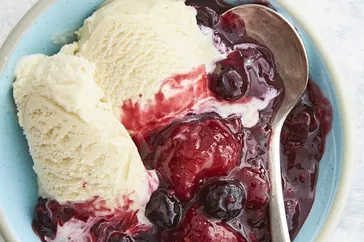

Warm Berry Compote

Description
This berry compote is made in a slow cooker with frozen berries and orange
juice. It's a yummy dessert by itself or over ice cream.
Ingredients
- 6 cups frozen mixed berries
- ½ cup white suagr
- ¼ cup orange juice
- 1½ teaspoons finely gratedd orange zest
- 2 tablespoons cornstrach
- 2 tablesspoons water
Steps
-
Stir frozen berries, sugar, orange juice, and orange zest together in a
slow cooker. Cover and cook on High until bubbling, about 1 1/2 hours.
-
Stir cornstarch and water together in a cup until fully dissolved. Stir
into berry mixture. Cover again and cook until thickened, 5 to 10
minutes. Serve warm or at room temperature.